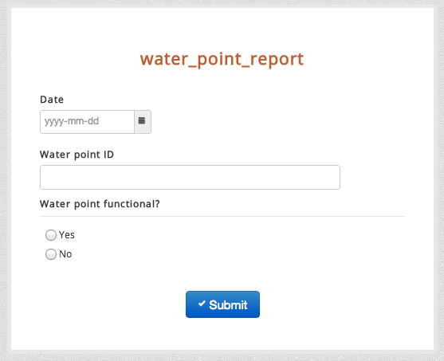
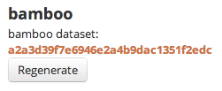

Using mobile phones to help monitor broken water points is a common use case for ICT in development.
In this example, we’ll show you how bamboo with a mobile reporting platform like formhub could be used to help you monitor the functionality of water points.
First, let’s create a very simple water report form using an XLSForm consisting of the following fields:
Note: Please avoid naming any fields “date” or bamboo will mistake it with an internal date function.
Next, download water_point_report.xls which is an XLSForm [1] representation of the form above and publish it to your formhub account. This will allow you to begin collecting data using this form via ODK Collect on your mobile or via a web-form.
Once you’ve published your form to formhub, you click on the webform link for water_point_report and enter some sample data. Your webform should look like this.
For this example, let’s imagine we have four water points labeled A-D. Pick a date (say Jan 1st, 2013) and submit a report for each water point indicating whether it’s functional or not. Once you’ve done this, go back to your formhub account and you should see 4 submissions for the water_point_report.
formhub provides some powerful ways to vizualize data but to generate dynamic indicators and for more advanced data analytics you will want to use bamboo.
What
Footnotes
| [1] | XLSForm is a simple form standard that allows you to author simple to complex forms using excel. To learn more about XLSForm please visit: the formhub.org/syntax. |